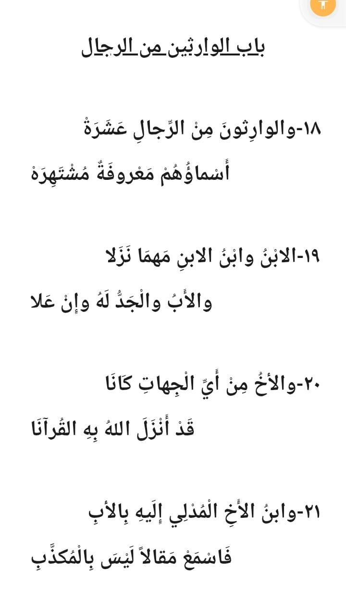
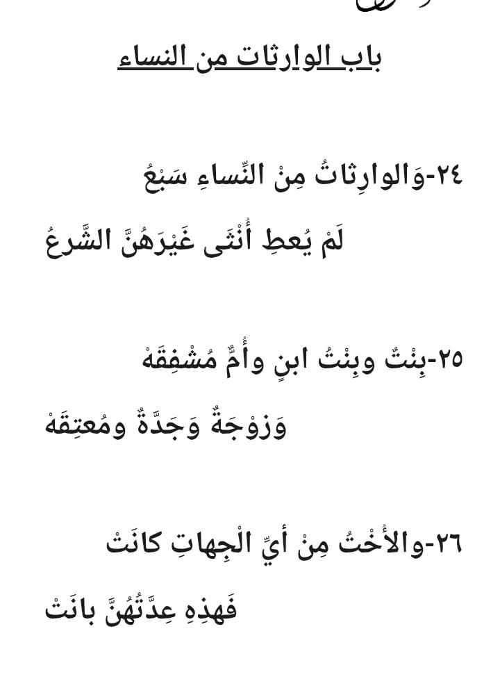
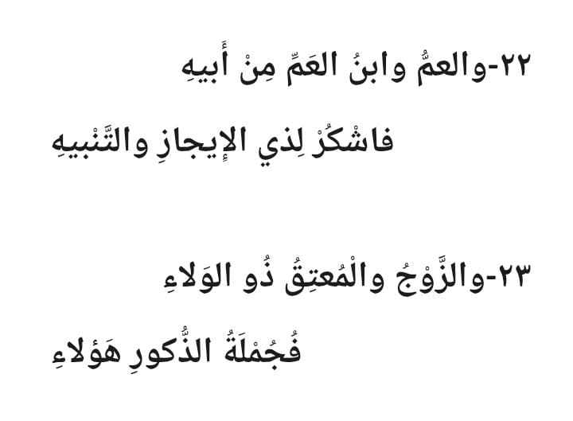
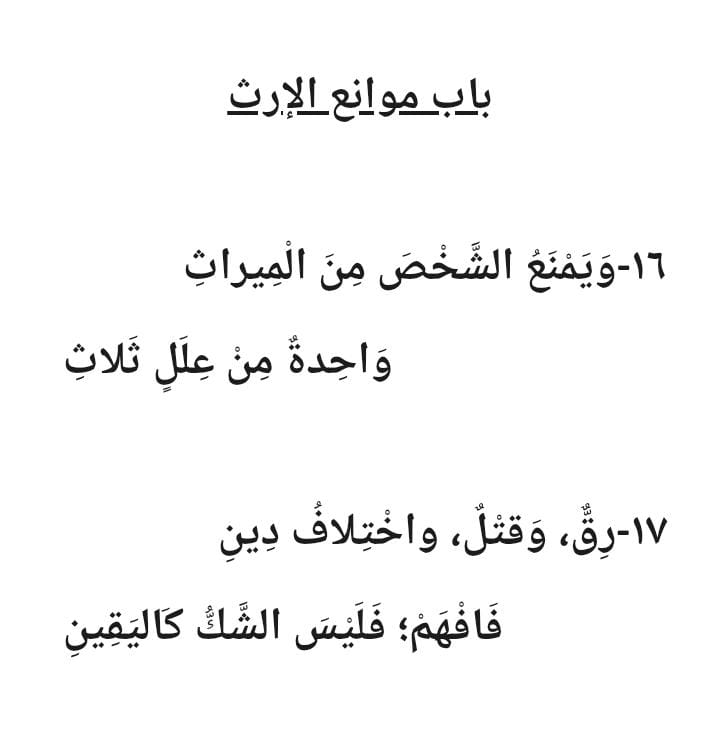
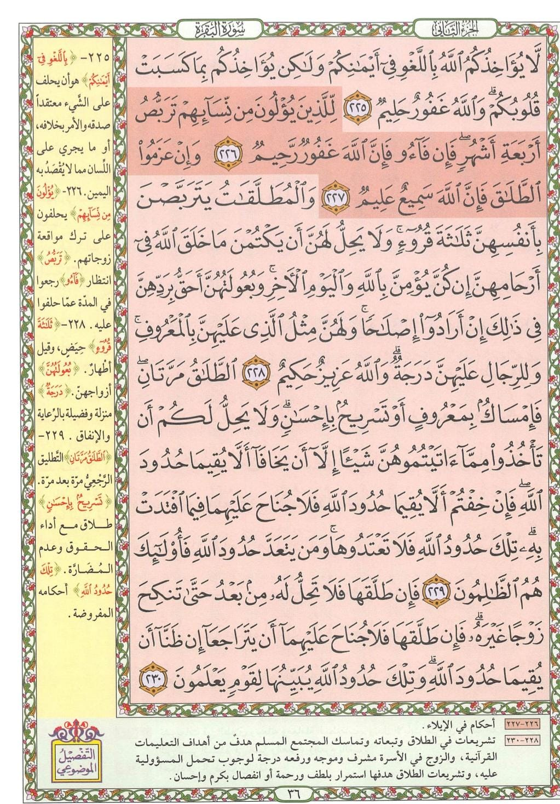

المحاضرة التاسعة: المتون العلمية، صفحات الأحكام، وطريقة الترميز 📜⚖️🏷️
نتناول في هذه المحاضرة ثلاث أدوات عقلية ومنهجية بالغة الأهمية لترسيخ أصعب المعلومات: المتون العلمية المنظومة (تطبيقاً على متن الرحبية في المواريث)، وصفحات الأحكام الفقهية في القرآن (تطبيقاً على صفحة 36 من سورة البقرة في الأيمان والطلاق)، وطريقة الترميز البصري للآيات والسور القصيرة (سورة التكوير صفحة 586).
المتون العلمية: حفظ القواعد والشريعة بالشعر المقفّى 📜🎶
ما هو المتن؟ كيف يثبت الشعر في العقل؟ وتطبيق عملي على متن الرحبية في المواريث
🧠 ما هو المتن ولماذا لجأ إليه العلماء قديماً؟
المتن العلمي هو شعر ونظم منظوم ببحور شعرية وقوافٍ موزونة، صاغه العلماء خصيصاً لنقل وتلخيص القواعد والأحكام الشرعية والتجويدية والنحوية بدقة متناهية.
السر العصبي في المتون أن الدماغ البشري مجبول على حب الإيقاع، الوزن، والنغم؛ فالأذن تطرب للقافية، والعقل يلتقط البيت الشعري ويحفظه بسهولة تفوق النثر العادي بمراحل، وتظل الأبيات راسخة في الذاكرة لعشرات السنين.
نفهم أولاً ➜ ثم نستمع للنظم ➜ ثم نبدأ الحفظ والتثبيت! الفهم هو الذي يفك شفرة الكلمات، والاستماع يضبط الوزن، والحفظ يرسخ المعلومة للأبد.
من أشهر وأعظم المنظومات التعليمية في العالم الإسلامي، نظمه الإمام محمد بن علي الرحبي لتبسيط علم المواريث (علم الفرائض) الذي قال عنه النبي ﷺ: «تعلّموا الفرائض وعلموها فإنه نصف العلم».
باب موانع الإرث (موانع الميراث الثلاثة):
«وَيَمْنَعُ الشَّخْصَ مِنَ المِيرَاثِ ... وَاحِدَةٌ مِنْ عِلَلٍ ثَلاَثِ»
«رِقٌّ وَقَتْلٌ وَاخْتِلاَفُ دِينِ ... فَافْهَمْ فَلَيْسَ الشَّكُّ كَالْيَقِينِ»
الشرح الميسر: لا يرث الشخص من قريبه إذا وُجد أحد هذه الموانع الثلاثة: 1. الرق (العبودية)، 2. القتل (إذا قتل الوارثُ مورّثه عمداً حُرم من الميراث معاملةً له بنقيض قصده)، 3. اختلاف الدين (بين المسلم وغير المسلم فلا توارث بين أهل ملتين).
باب الوارثات من النساء (سبع لا غيرهن في الشرع):
«وَالْوَارِثَاتُ مِنَ النِّسَاءِ سَبْعُ ... لَمْ يُعْطَ أُنْثَى غَيْرَهُنَّ الشَّرْعُ»
«بِنْتٌ وَبِنْتُ ابْنٍ وَأُمٌّ مُشْفِقَهْ ... وَزَوْجَةٌ وَجَدَّةٌ وَمُعْتِقَهْ»
«وَالأُخْتُ مِنْ أَيِّ الْجِهَاتِ كَانَتْ ... فَهَذِهِ عِدَّتُهُنَّ بَانَتْ»
باب الوارثين من الرجال (عشرة معروفة مشتهرة):
«وَالْوَارِثُونَ مِنَ الرِّجَالِ عَشَرَهْ ... أَسْمَاؤُهُمْ مَعْرُوفَةٌ مُشْتَهِرَهْ»
«الاِبْنُ وَابْنُ الاِبْنِ مَهْمَا نَزَلاَ ... وَالأَبُ وَالْجَدُّ لَهُ وَإِنْ عَلاَ»
«وَالأَخُ مِنْ أَيِّ الْجِهَاتِ كَانَا ... قَدْ أَنْزَلَ اللهُ بِهِ الْقُرْآنَا»
«وَابْنُ الأَخِ الْمُدْلِي إِلَيْهِ بِالأَبِ ... فَاسْمَعْ مَقَالاً لَيْسَ بِالْمُكَذَّبِ»
«وَالْعَمُّ وَابْنُ الْعَمِّ مِنْ أَبِيهِ ... فَاشْكُرْ لِذِي الإِيجَازِ وَالتَّنْبِيهِ»
«وَالزَّوْجُ وَالمُعْتِقُ ذُو الْوَلاَءِ ... فَجُمْلَةُ الذُّكُورِ هَؤُلاَءِ»
🖼️ الألواح الأصلية لأبيات المتن (A - B - C - D) للمطالعة والتحقق:
اضغط على أي صورة لتكبيرها 🔍



صفحات الأحكام في القرآن الكريم: صفحة 36 من سورة البقرة ⚖️📖
لماذا تُعد صفحات الأحكام من أصعب الصفحات؟ وكيف نفك شفرتها بالرابط الموضوعي واللفظي معاً؟
💡 لماذا صفحات الأحكام أصعب من صفحات القصص؟
صفحات القصص القرآني تسري بسلاسة وسهولة لأن الأحداث تتتابع زمنياً وشعورياً. أما صفحات الأحكام ففيها تشريعات، أوامر، استثناءات، وحدود شرعية مكثفة خالية من القصة المباشرة، مما يجعلها من أصعب ما يواجه الحفاظ.
الحل الذهبي: الفهم الدقيق للحكم الفقهي ➜ استخراج الكتل الموضوعية ➜ ثم تثبيت رؤوس الآيات بالروابط اللفظية.

الرابط الموضوعي الأول: أحكام اليمين والحلفان (3 آيات):
تتناول الآيات أحكام الحلف بالله، وتنقسم الأيمان في الفقه وحياتنا اليومية إلى ثلاثة أنواع خطيرة يجب على كل مسلم معرفتها:
مثل أن يقول شخص في حديثه: "والله لتشرب شاي!"، فيستعجل الضيف ولا يشرب. هذا لا كفارة فيه، وتوبته بالاستغفار والاستعاذة بالله. ﴿لَّا يُؤَاخِذُكُمُ اللَّهُ بِاللَّغْوِ فِي أَيْمَانِكُمْ وَلَٰكِن يُؤَاخِذُكُم بِمَا كَسَبَتْ قُلُوبُكُمْ﴾ (225).
كأن يقول لزوجته أو لصاحبه: "والله ما أنتِ نازلة من البيت اليوم!". فإذا نزلت انكسر اليمين وحنث، ووجب عليه شرعاً كفارة يمين (إطعام عشرة مساكين أو كسوتهم أو صيام ثلاثة أيام).
كأن يُسأل شخص: "هل رأيت هذا القلم؟" فيحلف كاذباً: "لا والله ما رأيته" وهو يعلم أنه رآه. هذا اليمين يغمس صاحبه في النار، وهو من الكبائر التي لا تكفرها كفارة إلا التوبة النصوح ورد المظالم!
الرابط الموضوعي الثاني واللفظي: أحكام الطلاق (3 آيات متتالية):
في النصف الثاني من صفحة 36، نجد ثلاث آيات في الطلاق، تمتاز بـ رابط لفظي صريح مباشر في مطلع كل آية يمنع التردد تماماً:
طريقة الترميز: تحويل الآيات لصور بصرية متسلسلة 🏷️🖼️
التقنية المثالية لحفظ السور والآيات القصيرة ذات الإيقاع السريع (تطبيق سورة التكوير 586)
طريقة الترميز: هي تحويل كل آية أو كلمة مفتاحية إلى رمز بصري أو صورة حية في الذهن، ثم نسج قصة خيالية متصلة تربط هذه الرموز تباعاً. هذه الطريقة تُشبه وضع "أيقونات" على شاشة الكمبيوتر، فبمجرد استدعاء الأيقونة ينفتح نص الآية تلقائياً!
سورة التكوير • صفحة 586 (مشاهد يوم القيامة العظمى) ⚡
﴿إِذَا الشَّمْسُ كُوِّرَتْ﴾
شمس عظيمة تُلف وتظلم وتذهب ضياؤها.﴿وَإِذَا النُّجُومُ انكَدَرَتْ﴾
نجوم السماء تتهاوى وتتساقط في الفضاء.﴿وَإِذَا الْجِبَالُ سُيِّرَتْ﴾
جبال شاهقة تُنسف وتتحرك كالسحاب.﴿وَإِذَا الْعِشَارُ عُطِّلَتْ﴾
النوق الحوامل النفيسة تُترك مهملة بلا راعٍ لهول الموقف.﴿وَإِذَا الْوُحُوشُ حُشِرَتْ﴾
حيوانات البر والوحوش الضارية تجتمع خائفة في صعيد واحد.﴿وَإِذَا الْبِحَارُ سُجِّرَتْ﴾
مياه المحيطات والبحار تتفجر وتتحول إلى نيران ملتهبة.﴿وَإِذَا النُّفُوسُ زُوِّجَتْ﴾
تقترن كل نفس بصاحبها وشبيهها (الأبرار مع الأبرار والفجار مع الفجار).﴿وَإِذَا الْمَوْءُودَةُ سُئِلَتْ * بِأَيِّ ذَنبٍ قُتِلَتْ﴾
الطفلة المدفونة حية تُسأل توبيخاً لقاتلها: بأي ذنب دُفنتِ؟﴿وَإِذَا الصُّحُفُ نُشِرَتْ﴾
صحائف ودواوين الأعمال تُفتح وتُنشر للحساب بين يدي الله.تخيّل المشهد في عقلك كأنه فيلم سينمائي: "انطفأت الشمس، فتساقطت النجوم من حولها، فاهتزت الجبال وسارت كالسحاب، فتركت قوافل الجمال والعشار بلا راعٍ، فخرجت الوحوش مذهولة تجري نحو البحار التي انفجرت نيراناً، فاجتمعت النفوس بأشباهها، ووقفت الموءودة تسأل عن دمها، ففُتحت الصحف للحساب!"
✨ بهذا المشهد المتصل، مستحيل أن تقدم آية على آية؛ لأن كل رمز يُسلّمك بصرياً للرمز التالي!
اختبار الاستيعاب السريع (5 أسئلة تفاعلية) 🎯🧠
تحقق فوراً من إتقانك للمتون العلمية، صفحات الأحكام، وتقنية الترميز
1️⃣ ما هي موانع الإرث الثلاثة المذكورة في متن الرحبية: «وَيَمْنَعُ الشَّخْصَ مِنَ المِيرَاثِ ... وَاحِدَةٌ مِنْ عِلَلٍ ثَلاَثِ»؟
2️⃣ كم عدد الوارثات من النساء وكم عدد الوارثين من الرجال كما حددهم متن الرحبية؟
3️⃣ في صفحة 36 من سورة البقرة، ما هو الحلف الذي يُعتبر من الكبائر وعقوبته النار ولا كفارة له لكبر إثمه؟
4️⃣ ما هو الرابط اللفظي الصريح المباشر لأوائل آيات الطلاق الثلاث في صفحة 36 من سورة البقرة؟
5️⃣ كيف نحفظ تسلسل الآيات القصيرة في سورة التكوير (الشمس ➜ النجوم ➜ الجبال...) دون تداخل؟
مبارك! لقد استوعبت محاور المحاضرة التاسعة بنسبة 100%
بامتلاكك لأسرار المتون الشعرية وفك شفرات صفحات الأحكام وتقنية الترميز، تصبح أصعب المحطات القرآنية في متناول يدك بسهولة تامة!
الواجبات العملية الثلاثة للمحاضرة التاسعة 📝🔥
تطبيق ثلاثي عملي على المتن وصفحات الأحكام والترميز
حفظ صفحة أو مقطع من المتون العلمية المذكورة في المحاضرة (مثل أبيات موانع الإرث أو الوارثات أو الوارثين من متن الرحبية).
💡 القاعدة: افهم المعنى أولاً ثم استمع للوزن ثم احفظ.حفظ صفحة أحكام من القرآن الكريم (صفحة 36 من سورة البقرة، أو اختيار صفحة أحكام أخرى إذا كنت تحفظها مسبقاً) بتطبيق الرابطين الموضوعي واللفظي.
⏱️ شغّل المؤقت وسجّل زمن الحفظ بالدقيقة والثانية.حفظ سورة أو صفحة من السور القصيرة (مثل سورة التكوير صفحة 586) من خلال تحويل الآيات إلى رموز بصرية ونسج قصة خيالية متصلة بينها.
🔄 طبق جدول المراجعات الست لتثبيتها في الذاكرة الدائمة.أنت الآن تمتلك أقوى أسلحة العقل لاقتحام أصعب النصوص الشرعية والقرآنية!
حين يجتمع سحر المتن المنظوم، مع وضوح الأحكام الفقهية، وإبداع الترميز البصري.. تتلاشى الصعوبة ويصبح الحفظ متعة لا تُنسى.